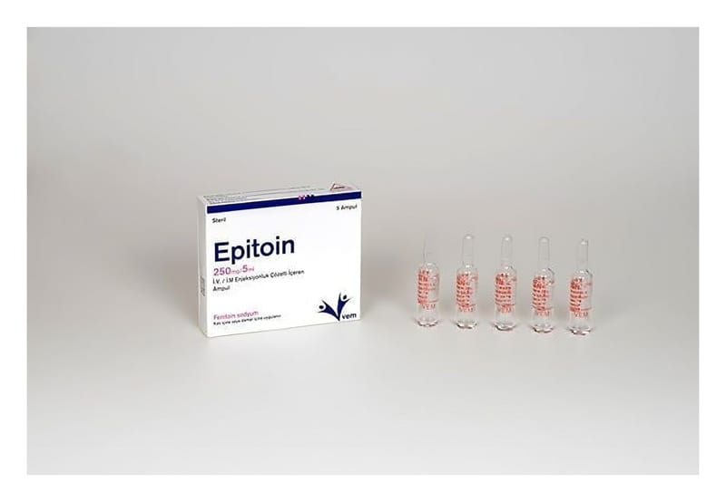

Epitoin 250 mg/5 ml IM/IV Enjeksiyonluk Çözelti İçeren Ampul, 5 Adet

Ne için kullanılır
KT · Bölüm 1 EPİTOİN etkin madde olarak her 5 ml’lik ampulde 250 mg fenitoin sodyum içermektedir. Her kutuda 5 adet ampul bulunmaktadır. EPİTOİN, anti-epileptik ilaçlar olarak adlandırılan ilaç grubundandır. Bu ilaçlar sara (epilepsi) tedavisinde kullanılır. EPİTOİN, şiddetli sara nöbetlerinin (status epilepticus) tedavisinde kullanılabilir. Ayrıca beyin ameliyatı sırasında veya sonrasında ve/veya ciddi kafa yaralanmalarında nöbetleri kontrol etmek veya önlemek için de kullanılabilir. EPİTOİN, ağızdan antiepileptik ilaçlar
alınamadığı durumlarda kısa bir süre için nöbetleri kontrol etmek veya önlemek için de kullanılır. EPİTOİN, özellikle digoksin adlı ilacın neden olduğu, kalp ritminde değişikliğe yol açan belirli sorunların tedavisinde kullanılabilir. Size neden EPİTOİN verildiği konusunda emin değilseniz, bunu doktorunuza sormalısınız.